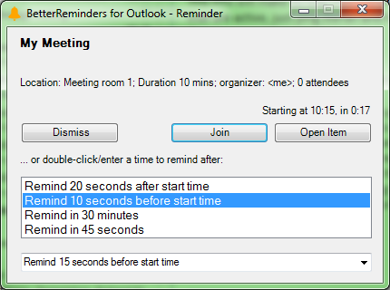

Introducing BetterReminders
This add-in was created to solve a couple of significant problems with Outlook's standard reminders window:
- unless you happen be using Outlook at the time, the reminder window shows up in the background and is therefore easily missed - frequently resulting in late attendance at meetings
- poor support for short snooze and reminder times - it works well for reminding you about something coming up in a day or a week, but doesn't work so well for telling you a meeting is just about to start, when you often want second-level rather than minute-level reminder granularity (e.g. 20 secs before start time), and the ability to quickly select a snooze time and continue with your work until it's actually time to join, without the error-prone and fiddly process of typing a snooze time expression into a textbox.
Here's a screenshot of the BetterReminders window for an upcoming meeting:
Feature list
The full feature list is:
- reminder window takes the focus and stays on top of other windows so you won't be at risk of missing it as with the regular outlook reminder window
- snooze times can be measured in seconds not just minutes (e.g. remind me 10 seconds before start - great for online meetings/informal conference calls)
- reminder window includes a countdown timer showing seconds before meeting starts or seconds overdue
- user-specified snooze times are supported, with the 5 most recently used available with a simple double-click (no finnicky combo box menu to open, and definitely no typing required)
- minimizing (rather than snoozing/dismissing) the reminder window results in it re-activating after 45 seconds so you don't forget to join
- in the interests of simplicity only the next upcoming item is shown in the window - subsequent reminders will appear when that window is dismissed or snoozed
- BetterReminders reminders always appear X seconds/minutes before start time regardless of the 'reminder' time set on the outlook item by whoever scheduled the meeting. You can still use Outlook's standard reminder window for longer-range reminders (e.g. 2 days in advance etc), but regardless of whether you've dismissed Outlook's reminder window, didn't notice it popping up in the background, or the meeting organiser didn't set one, you can rely on BetterReminders giving you a notification shortly before the meeting starts
- if you're using Microsoft Teams, Zoom, Lync or Webex there's a "Join" button available directly from the reminder window
Configuration
Options are configurable using Outlook's Options>Add-ins>Add-in Options dialog, allowing you to choose your: preferred reminder time, customize how the meeting URL is extracted from the meeting description (using a regular expression with a ?<url> named group; this can be used to add meeting links for other languages/translations/meeting tools), exclude certain meetings based on a subject regular expression, and optionally a .wav to play when showing a reminder.
Supported Outlook
Tested and developed with both Outlook 2010 and Office 365 (desktop version) - but there should be no reason for it not to work with other Outlook versions. If you're using a different Outlook version please get in touch to share your experiences, and this section will be updated accordingly.
Installation, uninstallation and upgrade
To install, download and extract the latest zip and run setup.exe.
To uninstall, select "Outlook BetterReminders" in the "Apps & Features" control panel.
To upgrade to a newer release, first uninstall the old version then install the new one.
Unfortunately as this is a free plugin it is not signed with a trusted certificate authority (these are expensive; instead it is self-signed), so users in locked-down security environments may have deal with security warnings as discussed in Microsoft's documentation (see Configure inclusion list security).
Authors and Contributors
Developed by @ben-spiller. Happy to accept code contributions and suggestions!
This software is licensed under the MIT license.